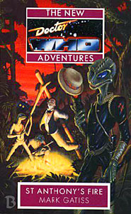

|
St Anthony's Fire
|
BASIC PLOT DOCTOR COMPANIONS MATERIALISATION CIRCUIT Pg 38 The planet Betrushia. Pg 137 In the rings above the planet Betrushia. Pg 161 Back where it was on Betrushia, but without the Doctor. Pg 247 On the bridge of the Chapter ship. Pg 268 On the bridge of the other Chapter ship. Pg 272 Back on Massatoris. PREPARATORY READING CONTINUITY REFERENCES Pg 19 "Threading her way through the long, white corridors which led away from the library." We saw a lot of this in The Dimension Riders. Pg 20 "As she stepped through the doorway [into the console room], she was shocked to discover the room in complete darkness." Reminiscent of Battlefield. Pg 21 "Bernice could make out most of the crumpled three-piece linen suit which the Doctor had recently adopted." White Darkness and not all that recently, to be honest. Pg 29 Reference to Ace's time in Spacefleet, which ended in Deceit. Pg 31 "One day, though, whilst working her way back from a tiny, shuttered room mostly crammed with unwound clocks, she had found the Eighth Door." Which is not the one to the Matrix from The Ultimate Foe. Pg 33 "It won't be long now.' This is foreshadowing Ace's forthcoming departure in Set Piece. Pg 36 "He splashed out of the water, a delighted little-boy's smile on his pixie-like features." The Doctor goes for a swim, which is reminiscent of The Enemy of the World. Though presumably not in his long-johns. Pg 37 "'I need time to think.' The Doctor was silent. Ace cuffed him playfully under his pointed chin. 'I did the same for you once, remember?' Love and War, one presumes, although this is something of a massive understatement. Pg 39 "Uprooted from her own time, set down in another, uprooted again, plonked down in the twenth-fifth century and so on and so on." Dragonfire, Dragonfire, Dragonfire, Love and War. Pg 44 "He passed his claw over the freshly restored St John's Ambulance badge." Which is very much back in the New Series, from The Eleventh Hour onwards. Pg 55 "And the odd hermaphrodite. Very odd, in fact." Alpha Centauri, from The Curse of Peladon, The Monster of Peladon and Legacy. Pg 69 "Priss looked about, his eyes glinting in the dismal light of the gas jets." What is it with Gatiss and gas lighting? See The Unquiet Dead. Pg 83 "She thought briefly of the splendor of the Silurian airships." Blood Heat. Pg 157 "Idly, he wished he still carried the specially adapted, vacuum-resistant propulsion-powered cricket ball which had got him out of that spot with the Urbankans." A thoroughly brilliant reference to Four to Doomsday. Pg 206 Reference to Ace's military training, again from Deceit. Pg 210 "And when we've finished with it, it will rest comfortably in absolution: a burning cinder in space." This is very nearly a quote from a line that the Doctor said in The Chase, except Hartnell screwed it up. Pg 227 "Revenge of the Chaptermen" is a silly chapter title that is designed to make you remember Revenge of the Cybermen. Unfortunately, by this point in the book, you do so fondly. OLD FRIENDS AND OLD ENEMIES NEW FRIENDS AND NEW ENEMIES Among the Cutch: Imalgahite Among the Chapter: Libon Fung
CONTINUITY COCK-UPS PLUGGING THE HOLES [Fan-wank theorizing of how to fix continuity cock-ups] FEATURED ALIEN RACES The Ismetch and the Cutch are both reptilian races, tall, with snouts, scales, a crest, bulbous temples, tiny ears and tiny teeth. The organism created by the original inhabitants of Betrushia is a creature that was designed to assess fitness for survival and choke off the things it deemed inappropriate. Inevitably, it turned out that they had created something which was designed to destroy pretty much everything. Idiots. FEATURED LOCATIONS The rings above the planet. The planet Massatoris, and its eleventh colony. The cathedral ship of the Chapter of St Anthony. All of this happens in 2148AD. IN SUMMARY - Anthony Wilson |
|
 |